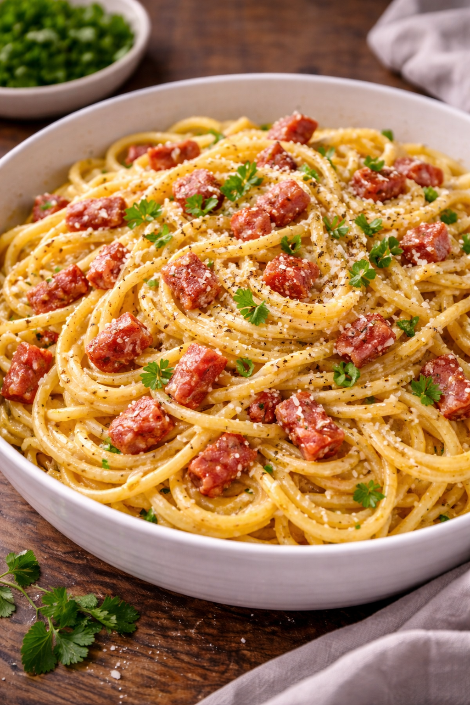

Ingrédients (2 personnes)
Nombre de personnes :
2 personnes
Les quantités s’ajustent automatiquement.
Optionnel : une gousse d’ail (à retirer), un peu de persil, ou un jaune d’œuf en plus pour une sauce
encore
plus riche.
Préparation des pâtes carbonara (20 min)
- Fais bouillir une grande casserole d’eau salée et lance les pâtes (al dente).
- Fais dorer les lardons/guanciale à la poêle (sans ajouter de matière grasse si
possible).
- Dans un bol, bats les œufs avec le parmesan + beaucoup de poivre.
- Quand les pâtes sont prêtes, garde une louche d’eau de cuisson puis égoutte.
- Coupe le feu sous la poêle, ajoute les pâtes dans la poêle avec les lardons.
- Verse le mélange œufs/fromage et mélange rapidement.
- Ajoute un peu d’eau de cuisson (1 à 3 c. à soupe) pour obtenir une sauce
onctueuse.
- Sers tout de suite, avec encore un peu de parmesan et du poivre.
Le secret : sauce onctueuse, pas d’œufs brouillés
- ✅ Toujours couper le feu avant d’ajouter les œufs.
- ✅ Utiliser l’eau de cuisson (amidon) pour lier la sauce.
- ✅ Mélanger vite, pendant 20–30 secondes.
Variantes simples (et bonnes)
- Carbonara poulet : remplace la moitié des lardons par du poulet.
- Carbonara champignons : ajoute des champignons poêlés.
- Plus légère : mets 1 œuf + 1 jaune au lieu de 2 œufs.
- Sans porc : remplace par dinde fumée ou saumon (goût différent mais top).
FAQ – Carbonara facile
Peut-on faire une carbonara avec de la crème ?
On peut, mais la carbonara traditionnelle est sans crème : œufs + fromage + eau de
cuisson.
Quel fromage utiliser ?
Idéal : pecorino. Sinon parmesan fonctionne très bien.
Quelles pâtes choisir ?
Spaghetti, linguine ou rigatoni : tout marche. Les longues pâtes donnent un rendu très “carbonara”.
À lire aussi
Omelette rapide du soir
•
Pâtes au thon express •
Recettes rapides
faciles